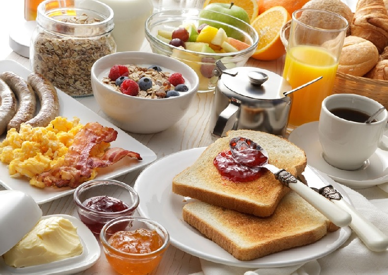

LE COLAZIONI NEL MONDO
DAL DOLCE AL SALATO
La colazione serve a tutti noi per iniziare con la giusta carica la giornata. I gusti mattutini cambiano molto in base alla cultura e alle tradizioni.
LE COLAZIONI DOLCI

In Italia la colazioni consiste in una bevanda calda come caffè, tè, oppure cappuccino abbinata ad una brioche oppure dei biscotti; c’è poi chi si limita a un frutto.

In Olanda la colazione inizia solitamente con i stroopwafel un tipico biscotto composto da due sottili cialde ricoperto da uno sciroppo al caramello.

In Russa la colazione inizia, con gli oladi, molto simili ai pancakes. Vengono di solito gustati con la panna acida, miele, marmellata oppure con frutti di bosco freschi.
LE COLAZIONI SALATE

Nel Regno Unito la tipica breakfast comprende uova, salsiccia, pancetta tagliata, fagioli, funghi, pane tostato, porridge; serviti insieme ad una tazza di tè.

In India la colazione inizia con un piatto tipico l'upma, una crema calda di grano con verdure tra cui cipolle, carote e fagiolini e speziata con zenzero, curry e senape.

In Cina si punta su piatti ricchi come il dim sum, che prevede vari panini al vapore, involtini di noodle di riso, zuppe di noodle, pollo in umido e verdure fritte.
LE COLAZIONI MISTE

In Islanda la colazione può comprende salumi,aringhe affumicate e pomodori ma anche una zuppa d'avena chiamato Hafragrautur servito con uva passa.

In Grecia la colazione può includere uova, salumi, pane con feta, ma c’è anche chi inizia la giornata con lo yogurt greco solitamente servito con noci e miele.

Nelle Filippine la colazione comprende molta frutta locale, servito insieme ad un piatto tipico tradizionale il Sinangag composto da riso, salsiccia saltati con aglio.